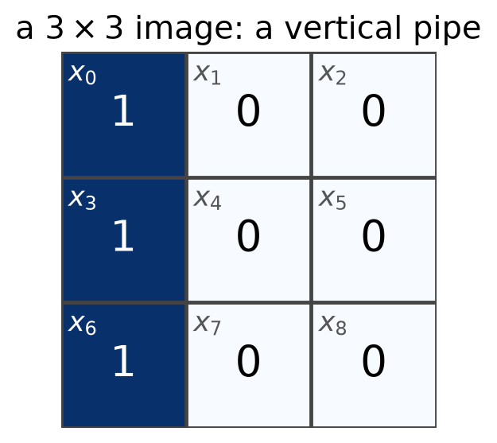
Convolutions and CNN Layers
Advanced Machine Learning
Sam Ogden
DRAFT
This slide deck is still under active development. Expect changes before it is finalized.
Learning objectives
- Describe how an MLP sees an image (flatten, then one weight per pixel position), and explain why that makes it a poor fit for images, and name the two properties of images (locality, repeated patterns) that convolution builds in
- Compute a convolution by hand, and say what a single filter “sees” when slid over an image
- Compute output shapes under padding and stride, and parameter counts for multi-channel layers
- Describe what pooling keeps and what it throws away
- Build the layer from scratch as an
nn.Module, then usenn.Conv2dandnn.MaxPool2dto assemble a small CNN, trace its shapes, and read LeNet as a stack of modules
Images and the MLP
How an MLP actually looks at an image
A very small image
- Each pixel is 0 (dark) or 1 (bright), so we can see every number
- The label x_k in the corner of each pixel is its position: row by row, x_0 to x_8
Step 1: flatten
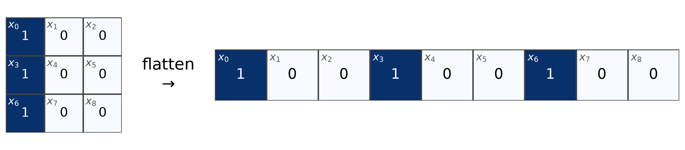
- An MLP takes a vector, so the grid is unrolled row by row: [1, 0, 0, 1, 0, 0, 1, 0, 0]
- The three pipe pixels were stacked in a column. Now they are just x_0, x_3, x_6
Step 2: a model on the flattened input
We want a model that answers one question: is there a pipe on the left? (output 1 for yes, 0 for no)
z = w_0 x_0 + w_1 x_1 + \dots + w_8 x_8 + b, \qquad \text{output} = \begin{cases} 1 & z > 0 \\ 0 & \text{otherwise} \end{cases}
- One weight w_i per pixel position, plus a bias b
- Nothing here says x_0 and x_3 were ever neighbors. They are just two separate inputs
The model, drawn out
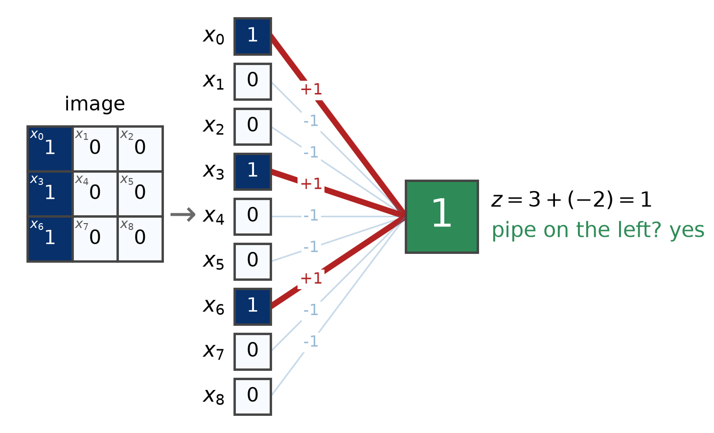
- Each line is a weight. Bold lines carry a pixel that is on
- Suppose training found +1 on x_0, x_3, x_6, -1 elsewhere, and b = -2
- Three bold red lines: z = 3 - 2 = 1 > 0, so the output is 1
Now move the pipe one pixel
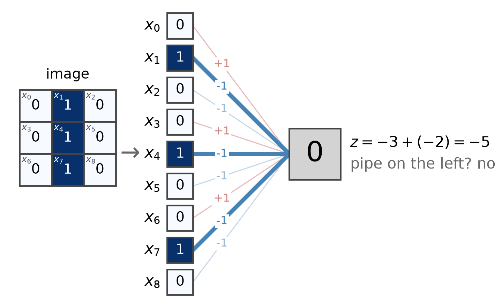
- Same model, same weights, pipe shifted one pixel to the right
- The pixels that are on (x_1, x_4, x_7) now hit weights of -1: z = -3 - 2 = -5, so the output is 0
A different model for the middle
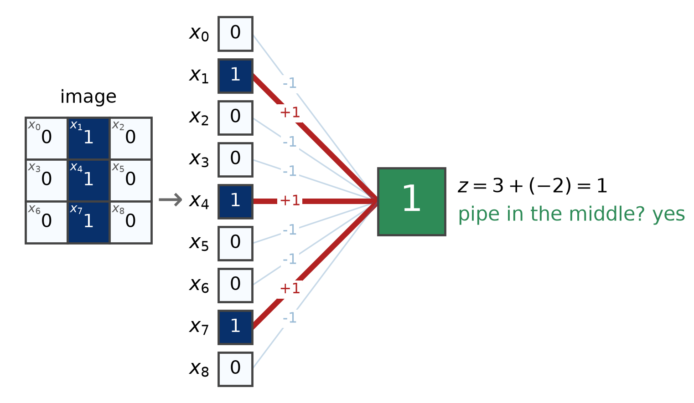
- To say “yes” here, the weights have to be different: +1 on x_1, x_4, x_7 instead
- This model has its own weights. It has to be trained on its own examples; nothing it learned about the left pipe carries over
One pipe, three positions, three models
| Input | Left-pipe model | Middle-pipe model | Right-pipe model |
|---|---|---|---|
| pipe on the left | 1 | 0 | 0 |
| pipe in the middle | 0 | 1 | 0 |
| pipe on the right | 0 | 0 | 1 |
- To spot the pipe anywhere, an MLP needs a separate set of weights per position, each learned on its own
- Why not merge them into one model that says “pipe anywhere”?
Why not one model for every position?
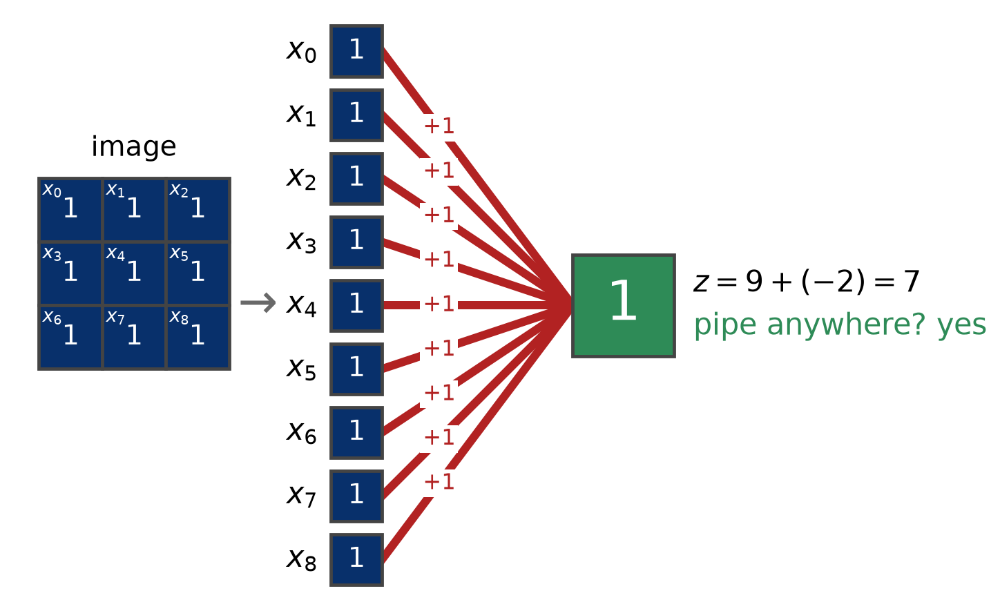
- One set of weights for the pipe in any column has to be +1 on all of x_0, \dots, x_8
- Any 3 pixel pattern is also “yes”
The core issue:
The MLP doesn’t know what’s next to what
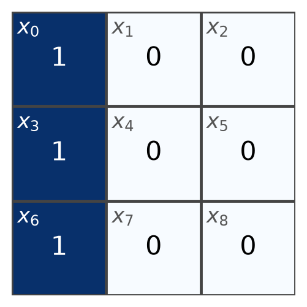
It has no idea that x_0 and x_3 are vertical neighbors. If a model should use that, we have to build it in
The same digit, moved a little
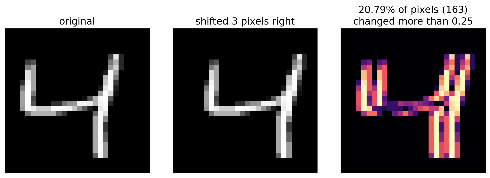
- To a person, it is obviously the same digit
- To an MLP, it is the pipe all over again: hundreds of inputs changed, so it has to learn the digit again at every position
Another issue: Scaling up
- A 28 \times 28 digit is 784 inputs, so each hidden unit has 784 weights, one per pixel position
- For a modest photo, the weights alone become a problem:
224 x 224 color photo -> 150,528 inputs
1000 hidden units -> 150,528,000 weights in the first layer aloneWhat do we know about images?
What do we already know about images that an MLP ignores?
Two facts about images
Locality
- A pixel’s meaning depends on its neighbors
- Edges, corners, and strokes are made of a few nearby pixels
- A pixel far across the image tells us little about it
The same pattern shows up anywhere
- A vertical edge is a vertical edge, in the top-left or the bottom-right
- A detector that works in one place should work in every place
The Big Idea
Look for the same small pattern everywhere in the image, using one small set of shared weights.
The convolution operation
Sliding a small pattern across the image
Convolution: the full definition
For a small kernel K of size k_h \times k_w slid over an input X:
Y[i, j] \;=\; \sum_{a=0}^{k_h - 1} \sum_{b=0}^{k_w - 1} K[a, b] \cdot X[i + a,\; j + b] \;+\; b_0
- K is a small grid of weights (the kernel, or filter); b_0 is a single bias
- Y is the output, also called a feature map
Breakdown: one output value, in 1D
Y[i] = \sum_{a} K[a] \cdot X[i + a]
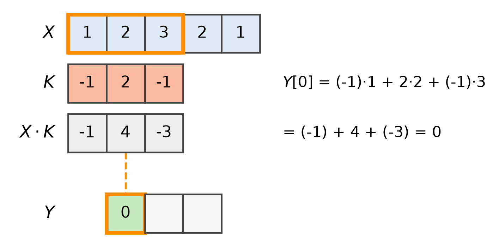
- Line the kernel up with a window of X, multiply each pair, and add: (-1)\cdot 1 + 2 \cdot 2 + (-1) \cdot 3 = 0
Breakdown: slide the window
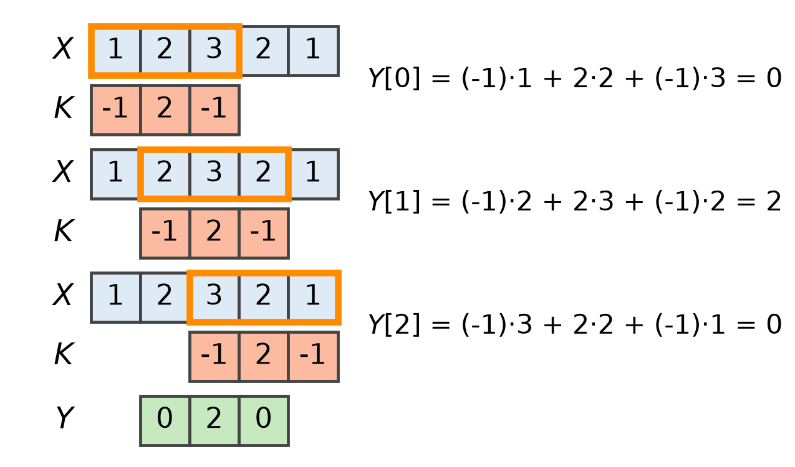
- The window of X under the kernel is a patch. In 2D it is a k_h \times k_w block
- One patch gives one number; slide the window for the next. Five inputs and a kernel of three give three outputs
- The kernel sums to 0: flat stretches give 0, only the peak stands out
Breakdown: what “convolution” really means here
- Strictly, this formula is cross-correlation. A true convolution flips the kernel first
- Deep learning libraries (and d2l) compute the formula above and call it convolution anyway
- The flip makes no practical difference: the kernel is learned, so a model that “wanted” the flipped one would just learn the flipped values
Worked example: our setup
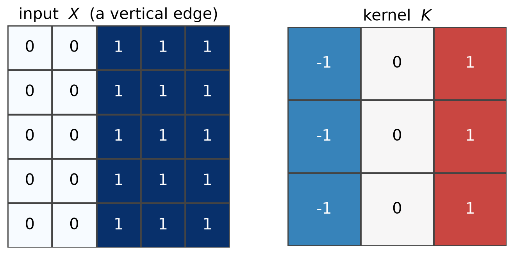
- X: dark on the left, bright on the right. K: right minus left
- Bias b_0 = 0 for now
Worked example: first position
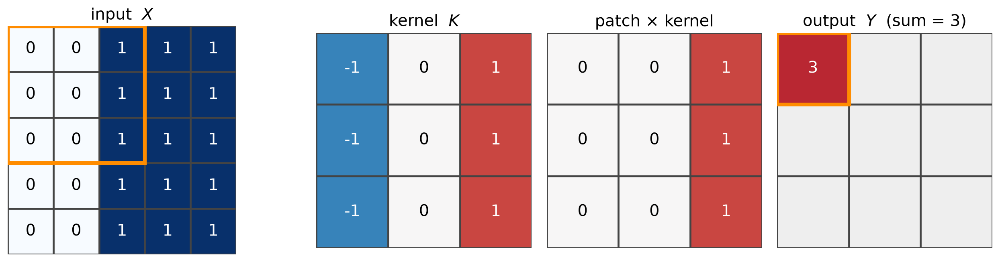
- The patch is the top-left 3 \times 3 corner of X; multiply by K and add: 0 + 0 + 1 in each row, three rows, total 3
Worked example: slide one step right
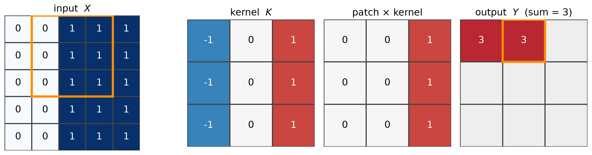
- Same K, new patch, new number. The weights did not change, only where we look
Worked example: slide once more
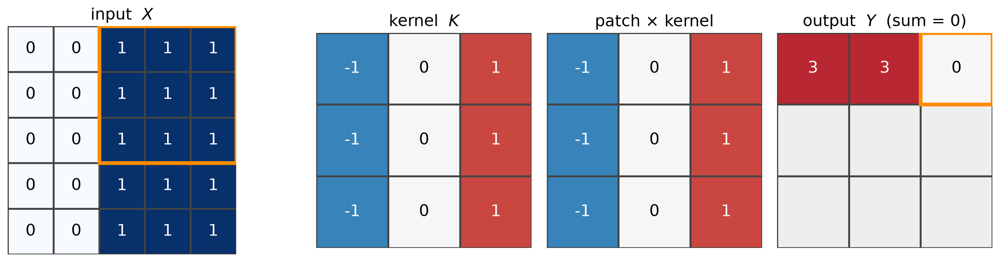
- The patch is now all 1s, so each row gives -1 + 0 + 1 = 0: no edge here, and the output is 0
- That is the end of the first row. The window then drops down one row and repeats
Worked example: every position
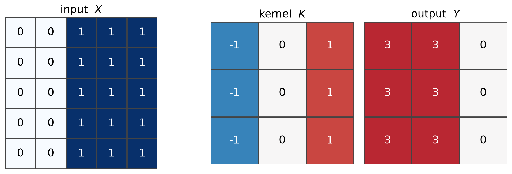
- Big where the patch looks like the kernel (dark-to-bright, left to right), zero where the patch is flat
- The output is 3 \times 3: the window has to fit inside the input, so only 5 - 3 + 1 = 3 places across a row of 5
A single filter on a real image
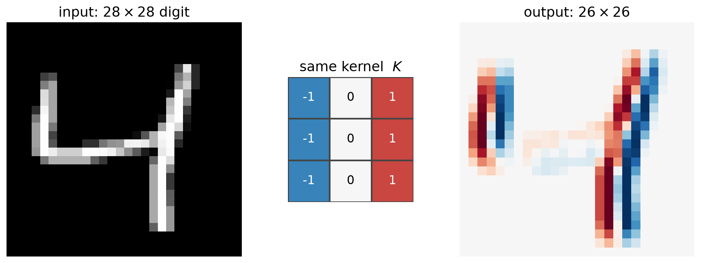
- Red: brighter on the right of the window. Blue: brighter on the left. Gray: flat
- The filter lights up on the vertical strokes, and only at their edges
What filters see
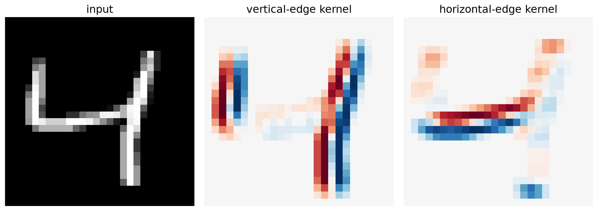
- Different kernel, different pattern detected, same sliding procedure
- A filter is a pattern detector: its output map says where in the image the pattern appears
Same shape, different name
A linear layer, one output
y = \sum_i w_i x_i + b
- Weights multiply every input
- One set of weights, used once
A convolution, one output position
\small Y[i,j] = \sum_{a,b} K[a,b]\, X[i{+}a, j{+}b] + b_0
- Weights multiply one patch
- The same weights are reused at every position
Far fewer parameters
Map a 28 x 28 image to six 26 x 26 feature maps:
fully connected layer: 3,183,960 parameters
convolution, 3x3, 6 filters: 60 parameters- Locality: each output looks at 9 pixels, not 784
- Weight sharing: the same 9 weights are reused at every position
- The kernel values are not designed by hand. They are parameters, found by gradient descent
Padding and stride
Controlling the output size
The output keeps shrinking
- Every convolution loses k - 1 rows and columns: 28 \to 26 \to 24 \to \dots
- Pixels at the edge appear in fewer windows than pixels in the middle
- Sometimes we also want to shrink the output on purpose, to look at the image more coarsely
Two knobs: padding and stride
Padding: add a border of zeros
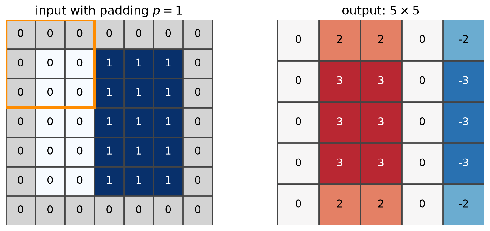
- Padding p adds p rows and columns of zeros on every side
- With k = 3 and p = 1, the output is the same size as the input
Stride: skip positions
- Stride s is how far the window moves each step. So far, s = 1
- With s = 2, the window jumps two pixels: we compute roughly half as many outputs per direction
- Larger stride means a smaller, coarser output map
Output size with padding and stride
\left\lfloor \frac{n + 2p - k}{s} \right\rfloor + 1
- n: input size, k: kernel size, p: padding per side, s: stride
- Apply it to the height and the width separately
- \lfloor \cdot \rfloor rounds down: a window that would hang off the edge is simply not used
Worked example: padding 1, stride 2
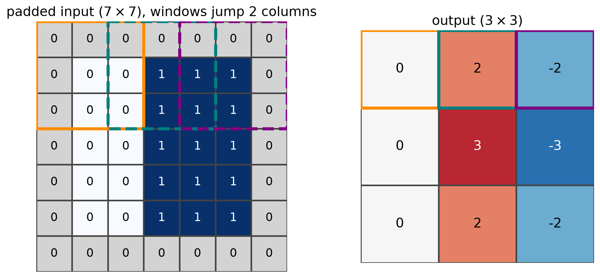
- Padding adds the gray border; stride 2 moves the window two columns (and two rows) at a time
- The first row of the output comes from the three windows shown. Windows overlap by one column
Worked example: our 5×5 input, 3×3 kernel
| Padding p | Stride s | Calculation | Output |
|---|---|---|---|
| 0 | 1 | \lfloor 2/1 \rfloor + 1 | 3 \times 3 |
| 1 | 1 | \lfloor 4/1 \rfloor + 1 | 5 \times 5 |
| 0 | 2 | \lfloor 2/2 \rfloor + 1 | 2 \times 2 |
| 1 | 2 | \lfloor 4/2 \rfloor + 1 | 3 \times 3 |
This is one line in PyTorch
padding=0, stride=1 -> (3, 3)
padding=1, stride=1 -> (5, 5)
padding=0, stride=2 -> (2, 2)
padding=1, stride=2 -> (3, 3)- Same four sizes as the table: 3 \times 3, 5 \times 5, 2 \times 2, 3 \times 3
- We will build up to
nn.Conv2dshortly. For now, notice thatpaddingandstrideare just arguments
Channels
More than one filter, more than one input map
One filter, one pattern
- A single filter detects a single pattern
- Images have many kinds of patterns: vertical strokes, horizontal strokes, diagonals, curves
Layers use maybe filters at once each producing their own output map
Multiple filters: multiple output channels
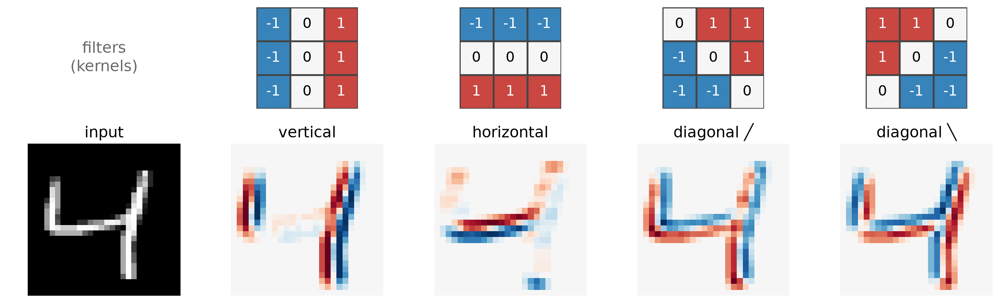
- Each filter produces one feature map. Stacking our 4 gives an output with 4 channels
- These four are hand-made; in a real CNN the filter values are learned
Multiple input channels
- A color image already has 3 channels (red, green, blue). Later layers take the previous layer’s feature maps as their input channels
- A kernel for a c_{in}-channel input has its own k \times k slice per input channel
Multiple input channels: the data flow
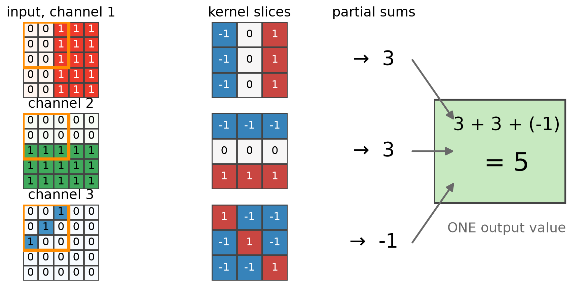
- Every slice multiplies its own channel’s patch
- The partial sums are added into a single output value
Shapes in one convolutional layer
| Shape | What it is | |
|---|---|---|
| Input | (c_{in},\, H,\, W) | c_{in} channels, each an H \times W grid |
| Weights | (c_{out},\, c_{in},\, k,\, k) | c_{out} filters, each with a k \times k slice per input channel |
| Bias | (c_{out}) | one number per filter |
| Output | (c_{out},\, H',\, W') | one feature map per filter |
- This describes one 2D convolutional layer. A CNN stacks several, and each layer’s output becomes the next layer’s input
- H', W' come from the output-size formula (kernel size, padding, stride)
Counting parameters
Start with one filter
- It has a k \times k slice for each of the c_{in} input channels: c_{in} \cdot k \cdot k weights
- It has a single bias: +1
A layer has c_{out} filters, each with its own weights and bias
c_{out} \cdot (c_{in} \cdot k \cdot k + 1) \;=\; \underbrace{c_{out} \cdot c_{in} \cdot k \cdot k}_{\text{weights}} \;+\; \underbrace{c_{out}}_{\text{biases}}
- c_{out} appears twice because every filter has its own bias
Counting parameters: worked examples
- 6 filters, 1 input channel, k = 3: 6 \cdot 1 \cdot 9 + 6 = 60
- 16 filters, 6 input channels, k = 3: 16 \cdot 6 \cdot 9 + 16 = 880
- These count only the weights and biases in the filters, which is what training has to learn
- They do not depend on the image size H \times W: a bigger image gives bigger outputs (more values to compute), but the same filters
Pooling
Summarizing a neighborhood
Exact position is too much detail
- After a filter, we know where it fired, down to the pixel
- But a “4” drawn one pixel to the left is still a 4
- These outputs (feature maps) are big and stacking more layers on top of them is expensive
The Big Idea
Keep the strongest response in each small neighborhood, and forget exactly where inside it that response was.
Max pooling example
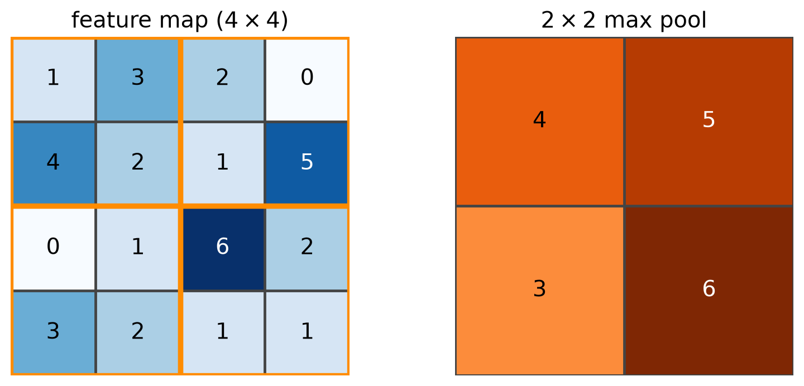
- Window 2 \times 2, stride 2 (non-overlapping): take the max of each block
Pooling on a real feature map

- Same pattern, a quarter of the numbers
What pooling keeps and discards
Keeps
- Whether the pattern appeared in the neighborhood
- How strong the strongest response was
Discards
- where in the neighborhood it was
- Everything weaker than the maximum
- Pooling has no parameters; there is nothing to learn
- Output size follows the same formula as convolution (use the pool size as k)
Building convolution layers
From the formula to nn.Module
LeNet: a CNN as a stack of modules
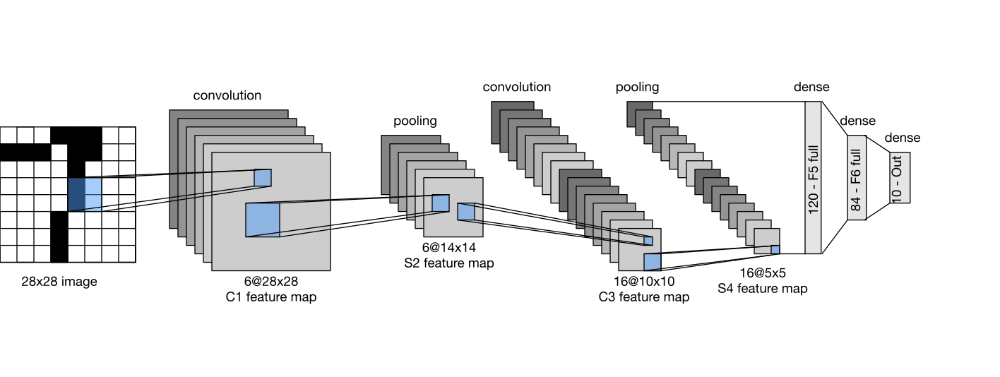
Figure: Zhang et al., Dive into Deep Learning, §7.6 (d2l.ai), CC BY-SA 4.0
- Read it left to right: every box is a module, and each one’s output is the next one’s input. We build the pieces first, then stack them
Step 1: the operation from scratch
tensor([[3., 3., 0.],
[3., 3., 0.],
[3., 3., 0.]])- Same numbers as our hand-worked example: every row [3, 3, 0]
Step 2: a layer is a Module
- Same interface as every model so far:
__init__creates parameters,forwardis the recipe - The kernel and bias are
nn.Parameters, so the optimizer will find them
Step 3: the kernel can be learned
x = torch.tensor(digit)
target = corr2d(x, K) # "what the right filter would produce"
layer = Conv2D((3, 3))
opt = torch.optim.SGD(layer.parameters(), lr=0.5)
for step in range(300):
loss = ((layer(x) - target) ** 2).mean()
opt.zero_grad()
loss.backward()
opt.step()
print(layer.weight.detach().round(decimals=1))tensor([[-0.9000, -0.1000, 1.0000],
[-1.0000, 0.0000, 1.0000],
[-1.0000, 0.0000, 1.0000]])- Hide a kernel K in the data; training from random values recovers it (\approx -1, 0, 1 per column)
- Nobody designs the filters in a CNN. We choose how many and how big; training chooses the values
The built-in version: nn.Conv2d
PyTorch ships the same operation. Does it agree with ours?
ours = Conv2D((3, 3))
theirs = nn.Conv2d(in_channels=1, out_channels=1, kernel_size=3)
with torch.no_grad(): # give both the same weights
theirs.weight.copy_(ours.weight.reshape(1, 1, 3, 3))
theirs.bias.copy_(ours.bias)
x = torch.tensor(digit)
print(torch.allclose(ours(x), theirs(x[None, None])[0, 0]))True- Same operation, same numbers.
nn.Conv2dreplaces ourConv2D; it is not a new idea - What it adds: many input and output channels, batches,
paddingandstride, and speed (no Python loops)
nn.Conv2d: shapes and arguments
weight: (6, 1, 3, 3)
bias: (6,)
output: (8, 6, 26, 26)- PyTorch layers expect batches of shape (batch, channels, height, width)
- Padding and stride are arguments:
nn.Conv2d(1, 6, 3, padding=1, stride=2) nn.MaxPool2d(2)is the pooling layer: pool size 2, stride 2 by default
Stacking into a small CNN
net = nn.Sequential(
nn.Conv2d(1, 6, kernel_size=3), nn.ReLU(), nn.MaxPool2d(2),
nn.Conv2d(6, 16, kernel_size=3), nn.ReLU(), nn.MaxPool2d(2),
nn.Flatten(),
nn.Linear(16 * 5 * 5, 10),
)
X = torch.zeros(1, 1, 28, 28)
for layer in net:
X = layer(X)
print(f"{type(layer).__name__:10s} -> {tuple(X.shape)}")Conv2d -> (1, 6, 26, 26)
ReLU -> (1, 6, 26, 26)
MaxPool2d -> (1, 6, 13, 13)
Conv2d -> (1, 16, 11, 11)
ReLU -> (1, 16, 11, 11)
MaxPool2d -> (1, 16, 5, 5)
Flatten -> (1, 400)
Linear -> (1, 10)Tracing shapes: why the 400?
- 28 \to 26 (conv, no padding) \to 13 (pool) \to 11 (conv) \to 5 (pool, rounds down)
- The last feature maps are 16 \times 5 \times 5, so
Flattengives 16 \cdot 5 \cdot 5 = 400 numbers - That is where
nn.Linear(400, 10)comes from.- Shape mismatches here are the most common CNN bug: trace the shapes by hand first
Throwback: the same input through an MLP
MLP, one tiny hidden layer (16 units): 12,730 parameters
small CNN from the last slide: 4,950 parameters- Even a tiny MLP has more parameters than our CNN: its first layer alone is 784 \cdot 16 + 16 = 12{,}560
- The CNN gets away with fewer because each 3 \times 3 filter is reused at every position, instead of every pixel getting its own weight to every unit
Reference: a CNN is just another nn.Module
class SmallCNN(nn.Module):
def __init__(self, num_classes=10):
super().__init__()
self.network = nn.Sequential(
nn.Conv2d(1, 6, kernel_size=3), nn.ReLU(), nn.MaxPool2d(2),
nn.Conv2d(6, 16, kernel_size=3), nn.ReLU(), nn.MaxPool2d(2),
nn.Flatten(),
nn.Linear(16 * 5 * 5, num_classes),
)
def forward(self, X):
return self.network(X)
model = SmallCNN()
model(torch.zeros(8, 1, 28, 28)).shapetorch.Size([8, 10])- Same
__init__andforwardpattern as the MLP. Training works exactly the same way: next lecture
The diagram as code: LeNet
class LeNet(nn.Module):
def __init__(self, num_classes=10):
super().__init__()
self.network = nn.Sequential(
nn.Conv2d(1, 6, kernel_size=5, padding=2), nn.Sigmoid(),
nn.AvgPool2d(kernel_size=2, stride=2),
nn.Conv2d(6, 16, kernel_size=5), nn.Sigmoid(),
nn.AvgPool2d(kernel_size=2, stride=2),
nn.Flatten(),
nn.Linear(16 * 5 * 5, 120), nn.Sigmoid(),
nn.Linear(120, 84), nn.Sigmoid(),
nn.Linear(84, num_classes),
)
def forward(self, X):
return self.network(X)- One line per box in the diagram. The original used
Sigmoidand average pooling; todayReLUand max pooling are typical - d2l writes this with
LazyConv2dandLazyLinear, which work out the input sizes for you. Here we spell them out
LeNet: tracing shapes against the diagram
Conv2d -> (1, 6, 28, 28)
AvgPool2d -> (1, 6, 14, 14)
Conv2d -> (1, 16, 10, 10)
AvgPool2d -> (1, 16, 5, 5)
Flatten -> (1, 400)
Linear -> (1, 120)
Linear -> (1, 84)
Linear -> (1, 10)
total parameters: 61,706- Compare with the diagram’s labels: 6@28 \times 28, 6@14 \times 14, 16@10 \times 10, 16@5 \times 5, then 120, 84, 10. (
padding=2keeps the first convolution at 28 \times 28)
Looking ahead: representations
What are the convolutional layers for?
The model has two parts
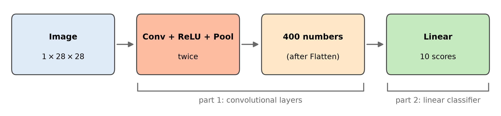
- The last layer is the same linear classifier we already know
- It does not see pixels. It sees the 400 numbers the convolutional layers produced
Foreshadowing: layers produce features
- Each of those 400 numbers answers a question about the image: how strongly is this pattern here?
- The pattern detectors are learned, not hand-designed. Training picks the filters that make the classifier’s job easiest
- Stack layers, and later filters look at patterns of patterns: a 3 \times 3 filter on top of a 3 \times 3 filter effectively sees a 5 \times 5 region
The Big Idea (for the rest of the course)
A deep model learns to turn raw data into a representation, a set of features, that makes the final task easy.
- CNNs are our first example, and we will keep coming back to it: what does the model learn to see?
Summary
Recap: the convolution toolkit
| Piece | What it does | Size / cost |
|---|---|---|
| Convolution | Slide a shared kernel, sum products | \lfloor (n + 2p - k)/s \rfloor + 1 |
| Padding p | Border of zeros keeps edges and size | input grows by 2p |
| Stride s | Move the window more than 1 pixel | output shrinks by \approx s |
| Channels | A kernel slice per input channel | c_{out} c_{in} k^2 + c_{out} |
| Pooling | Keep the max per neighborhood | no parameters |
Recap: key ideas
- Locality and weight sharing: look at small patches with the same weights everywhere
- A filter is a pattern detector; its output map says where the pattern appears
- Filter values are learned by gradient descent, just like every other weight
- A CNN layer is an
nn.Modulelike any other:nn.Conv2d,nn.MaxPool2d, andnn.Sequential - Next time: train a CNN end to end and compare it to an MLP on the same data
CST463 · Advanced Machine Learning